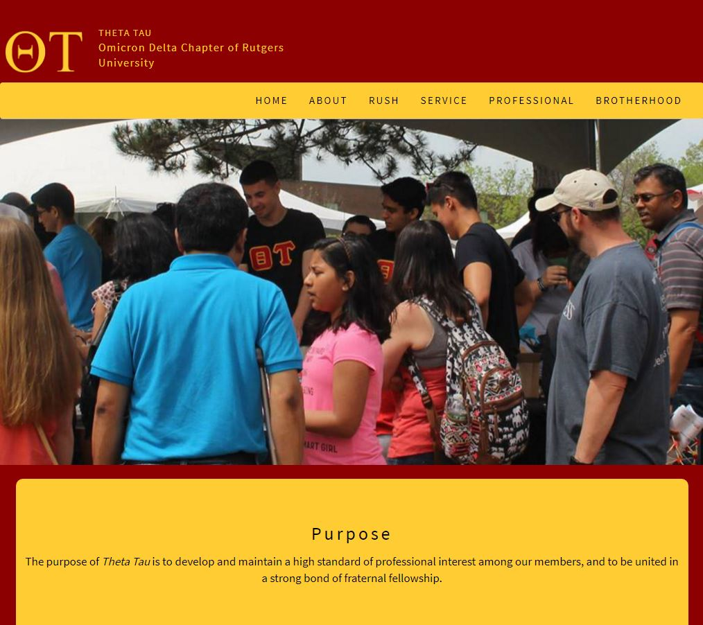

PROJECTS

SWARM ROBOTICS
Swarm robotics centers around the idea that if two is better than one, than many must be even better. This project sets out to test this by reworking existing open source swarm robotics projects by designing, printing and constructing a custom robotics platform to solve mazes and puzzles.
Robotics

WEB DEVELOPEMENT
I do work as a web developer on the side, both for the organizations that I am a part of, and for friends and family. Its nice to have a small source of income during college, but in reality I gain more from growing as a developer and using tools used in industry. Check out some of my work: Rutgers Theta Tau
Web Development